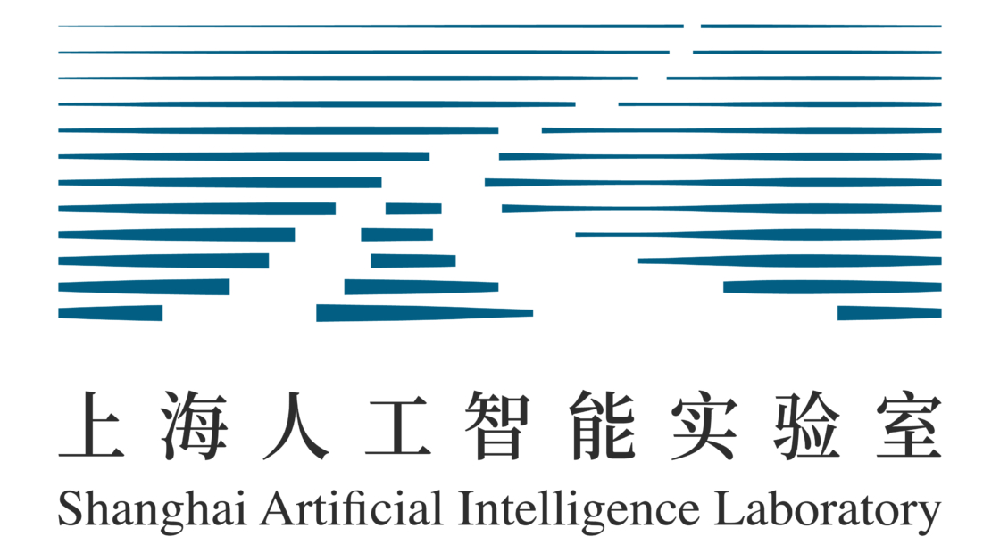

Jiaqi WeiPh.D. Student, Zhejiang University
Shanghai, China |
About
Hi there! I'm Jiaqi Wei, a Ph.D. student at Zhejiang University, where I conduct my research under the excellent guidance of Prof. Siqi Sun and Prof. Wanli Ouyang. Before beginning my doctoral studies here, I completed my B.E. degree in Computer Science at Shandong University (GPA: 93.83/100.00; Rank 1st).
My core research interests lie at the fascinating intersection of LLM, Agent and AI for Science. Feel free to reach out if you'd like to discuss potential collaborations or share ideas.
News
- 2026.02: 1 paper has been accepted by ICML 2026.
- 2026.02: 1 paper has been accepted by CVPR 2026.
- 2025.10: 1 paper has been accepted by EMNLP 2025 NewSumm Workshop.
- 2025.09: 3 papers have been accepted by NeurIPS 2025.
- 2025.08: Our survey about "Agentic Science: Autonomous Scientific Discovery" was released. Thanks to all collaborators!
- 2025.05: 1 paper has been accepted by ACL 2025.
- 2025.05: 2 papers have been accepted by ICML 2025.
- 2024.11: 1 paper has been accepted by Nature Communications.
Internships
|
 |
Shanghai AI Lab Research Intern.
Oct. 2023 - Current
|
Selected Publications
(Co-) First Author Publications; † means equal contribution.
-
When to Think, When to Speak: Learning Disclosure Policies for Large Language Model Reasoning
Jiaqi Wei†, Xuehang Guo†, Pengfei Yu†, Xiang Zhang, Wanli Ouyang, Siqi Sun, Qingyun Wang, Chenyu You
NeurIPS 2025 -
Retrieval is Not Enough: Enhancing RAG through Test-Time Critique and Optimization
Jiaqi Wei†, Hao Zhou†, Xiang Zhang, Di Zhang, Zijie Qiu, Wei Wei, Jinzhe Li, Wanli Ouyang, Siqi Sun
NeurIPS 2025 -
From AI for Science to Agentic Science: A Survey on Autonomous Scientific Discovery
Jiaqi Wei, Yuejin Yang, Xiang Zhang, Yuhan Chen, Xiang Zhuang, Zhangyang Gao, Dongzhan Zhou, Guangshuai Wang, Zhiqiang Gao, Juntai Cao, Zijie Qiu, Xuming He, Qiang Zhang, Chenyu You, Shuangjia Zheng, Ning Ding, Wanli Ouyang, Nanqing Dong, Yu Cheng, Siqi Sun, Lei Bai, Bowen Zhou
Survey, ScienceAI -
Curriculum Learning for Biological Sequence Prediction: The Case of De Novo Peptide Sequencing
Xiang Zhang†, Jiaqi Wei†, Zijie Qiu†, Sheng Xu, Nanqing Dong, Zhiqiang Gao, Siqi Sun
ICML 2025 -
Universal Biological Sequence Reranking for Improved De Novo Peptide Sequencing
Zijie Qiu†, Jiaqi Wei†, Xiang Zhang†, Sheng Xu, Kai Zou, Zhi Jin, Zhiqiang Gao, Nanqing Dong, Siqi Sun
ICML 2025 -
Bidirectional Representations Augmented Autoregressive Biological Sequence Generation
Xiang Zhang†, Jiaqi Wei†, Zijie Qiu, Sheng Xu, Zhi Jin, ZhiQiang Gao, Nanqing Dong, Siqi Sun
NeurIPS 2025 -
MassNet: billion-scale AI-friendly mass spectral corpus enables robust de novo peptide sequencing
A Jun†, Xiang Zhang†, Xiaofan Zhang†, Jiaqi Wei†, Te Zhang, Yamin Deng, Pu Liu, Zongxiang Nie, Yi Chen, Nanqin Dong, Zhiqiang Gao, Siqi Sun, Tiannan Guo
Nature Methods Under Review -
TimeSeriesScientist: A General-Purpose AI Agent for Time Series Analysis
Haokun Zhao†, Xiang Zhang†, Jiaqi Wei†, Yiwei Xu, Yuting He, Siqi Sun, Chenyu You
Arxiv -
FORESTLLM: Large Language Models Make Random Forest Great on Few-shot Tabular Learning
Zhihan Yang†, Jiaqi Wei†, Xiang Zhang, Haoyu Dong, Yiwen Wang, Xiaoke Guo, Pengkun Zhang, Yiwei Xu, Chenyu You
Arxiv -
Reflection Pretraining Enables Token-Level Self-Correction in Biological Sequence Models
Xiang Zhang†, Jiaqi Wei†, Yuejin Yang, Zijie Qiu, Yuhan Chen, Zhiqiang Gao, Muhammad Abdul-Mageed, Laks VS Lakshmanan, Wanli Ouyang, Chenyu You, Siqi Sun
Arxiv
Co-Author Publications
-
Why Prompt Design Matters and Works: A Complexity Analysis of Prompt Search Space in LLMs
Xiang Zhang, Juntai Cao, Jiaqi Wei, Chenyu You, Dujian Ding
ACL 2025, 机器之心 -
PrimeNovo: an accurate and efficient non-autoregressive deep learning model for de novo peptide sequencing
Xiang Zhang, Tianze Ling, Zhi Jin, Sheng Xu, Zhiqiang Gao, Boyan Sun, Zijie Qiu, Jiaqi Wei, Nanqing Dong, Guangshuai Wang, Guibin Wang, Leyuan Li, Muhammad Abdul-Mageed, Laks VS Lakshmanan, Fuchu He, Wanli Ouyang, Cheng Chang, Siqi Sun
Nature Communications, DrugAI -
Scientists' First Exam: Probing Cognitive Abilities of MLLM via Perception, Understanding, and Reasoning
Yuhao Zhou, Yiheng Wang, Xuming He, Ruoyao Xiao, Zhiwei Li, Qiantai Feng, Zijie Guo, Yuejin Yang, Hao Wu, Wenxuan Huang, Jiaqi Wei, Dan Si, Xiuqi Yao, Jia Bu, Haiwen Huang, Tianfan Fu, Shixiang Tang, Ben Fei, Dongzhan Zhou, Fenghua Ling, Yan Lu, Siqi Sun, Chenhui Li, Guanjie Zheng, Jiancheng Lv, Wenlong Zhang, Lei Bai
NeurIPS 2025, 机器之心 -
PosterGen: Aesthetic-Aware Paper-to-Poster Generation via Multi-Agent LLMs
Zhilin Zhang, Xiang Zhang, Jiaqi Wei, Yiwei Xu, Chenyu You
CVPR 2026 Findings, 机器之心
Honors & Awards
- 2025, Outstanding Graduate Students of ZJU.
- 2024, Outstanding Graduate of Shandong Province.
- 2024, Outstanding Graduate of Shandong University.
- 2023, Merit Student of Shandong University.
- 2023, National Scholarship.
- 2022, National Scholarship.
- 2021-2024, 1st Class Excellent Student Scholarships in SDU * 3.
Education
|
Zhejiang University Ph.D. student.
Sep. 2024 - Current
|
|
|
Shandong University B.E. degree.
Sep. 2020 - Jun. 2024
|
© Jiaqi Wei | Last updated: 2026/05/24